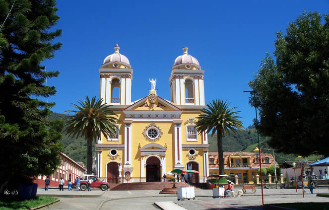
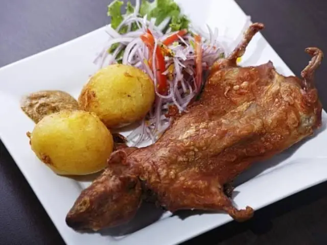

NARIÑO
REGIÓN: ANDINA
PUNTO DE INTERES
JESÚS NAZARENO

DESCRIPCION
Sobre la nave izquierda del templo se construyeron diez cúpulas que como bonetes rojos decoran el exterior de la iglesia y forman redondeles dentro del templo. es El Tambo, al norte, a solo 40 kilómetros y una hora en carro desde Pasto.
GASTRONOMIA

Cuy: La comida típica de Nariño incluye platos como el frito pastuso, el cuy o conejillo de indias asado, las empanadas, los quimbolitos y el canelazo.